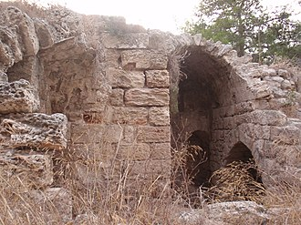
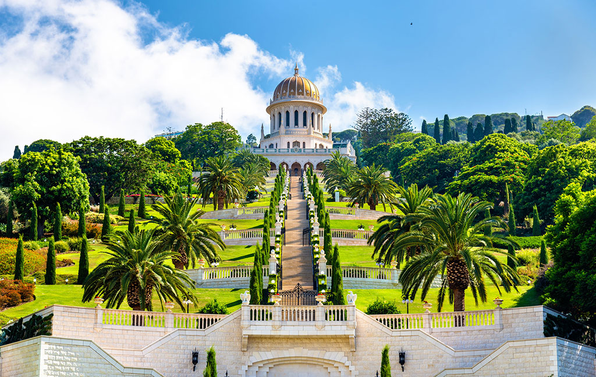

חיפה היא אחת הערים המגוונות ביותר בישראל, החל מבחינת האוכלוסייה המתגוררת בה ועל המשמעויות התרבותיות הנגזרות מכך, וכלה בנופיה האורבניים לצד שמורות הטבע הרבות שבה.
אחת הדרכים המרגשות שיש להתוודע לעיר היא להכיר את ההיסטוריה שלה, ולהציץ לחיי האנשים והנופים שהשתנו. ביקור באתר ארכיאולוגי בחיפה הוא תמיד הזדמנות לחוויה מרעישה: החל מן המערות השונות שנמצאו בהן עדויות ושרידים לאדם הקדמון, דרך מבנים השוכנים בלב לבן של השכונות השונות וטומנים בחובם סיפורים ואגדות, וכלה בעתיקות.
כך למשל, ניתן להתרשם משרידיה של מצודה שנשמרו מימי הצלבנים ב"מבצר ראש מיה" הממוקם בשכונת רוממה, או לבקר ב"קיר העורבים" - אחד מאתרי ההתיישבות המרכזיים מן התקופה הפרהיסטורית הממוקם לרגלי שכונת רמת אלון.
אחד מאתרי התיירות המוכרים ביותר והבולטים ביותר בחיפה הוא הגנים הבהאיים. הגנים המטופחים מורכבים מתשעה עשר גנים הבנויים בצורה מדורגת, שראשיתם בפסגתו המוריקה של הר הכרמל וסופם למרגלותיו, כאשר מקדש בעל כיפת זהב הנראה למרחוק ניצב בלב הגנים. חיפה מציעה גם שיטוט רגלי במסלולים שנועדו הן ליחידים, הן לזוגות והן למשפחות.
אחד ממסלולי ההליכה המפורסמים מכונה שביל "אלף המדרגות", המוביל ממרכז הכרמל עד לעיר התחתית, באופן הפורש בפני המטייל תקופות שונות בחיי העיר, מזו המודרנית ועד לזו העתיקה.
חיפה מרושתת בפארקים רבים כגון פארק הכרמל, פארק הקישון לצד גנים בעלי אופי ייחודי ושונה, ביניהם גן הפסלים וגן האם. בנוסף, העיר מצטיינת בטיילות מרשימות המגייסות את יופיו של הים למסלולי ההליכה, כגון טיילת בת גלים השוכנת לאורך החוף.
ניתן לתכנן בחיפה טיולים על פי נושאים ותחומי ענין שונים, ולגלות כי העיר היא אין סופית מבחינת ההיצע. כך למשל, ניתן לקיים מסלול הבוחן מבני דת עבור הדתות השונות המאפיינות את חיפה, והעיר מפורסמת בהם.
בחכזה הוא בית הכנסת הגדול של חיפה שהוקם ב-1937, או מסגד אל ג'רינה שניצב כבר מן המאה ה-18 בעיר התחתית. אחד ממבני הדת המפורסמים של חיפה הוא מנזר סטלה מאריס שאחד מאגפיו משמש כמקום לינה עבור צליינים מכל העולם.
חיפה